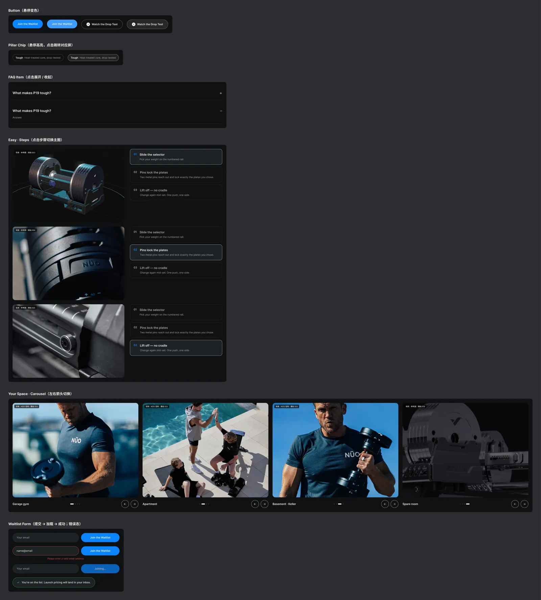

Explore 教育页 · 开发需求说明（V5）
一、基本信息
- 页面：P19 Explore 教育页，独立站单页，8 屏 + 等待名单 + 页头页脚。
- 设计基准：PC 1440 宽，内容区 1200，左右边距 120；Mobile 390 宽，左右边距 16。
- 断点建议：≥1024 用 PC 布局；768–1023 内容区自适应、并排卡片降为 2 列；<768 用 Mobile 布局。
- 屏占比口径：PC 按视口 1440×900 计 1 屏，Mobile 按 390×844 计 1 屏。
- 英文主张 Built to Take the Drop 已确定；页面按“主张 → 三支柱”组织。
二、屏占比
首屏（Header + Hero + 锚点栏）PC 正好 1 屏、Mobile 0.99 屏。Tough 与 Easy 承载主证据与交互，允许略超 1 屏；其余每屏不超过 1.1 屏。
| 模块 | 锚点 | PC 高度 px | PC 屏占比 | Mobile 高度 px | Mobile 屏占比 |
|---|---|---|---|---|---|
| Header（广告位 + 导航） | — | 101 | 0.11 | 89 | 0.11 |
| Screen 1 · Hero + 锚点栏 | #top | 799 | 0.89（与 Header 合计 1.00） | 744 | 0.88（与 Header 合计 0.99） |
| Screen 2 · Tough（耐摔） | #tough | 1076 | 1.20 | 1035 | 1.23 |
| Screen 3 · Craft（工艺信任） | #craft | 877 | 0.97 | 1187 | 1.41 |
| Screen 4 · Precise（高精度） | #precise | 873 | 0.97 | 938 | 1.11 |
| Screen 5 · Easy（易用 + Drop Set） | #easy | 1097 | 1.22 | 983 | 1.16 |
| Screen 6 · Your Space（P1a） | #your-space | 792 | 0.88 | 816 | 0.97 |
| Screen 7 · Details | #details | 630 | 0.70 | 549 | 0.65 |
| Screen 8 · FAQ | #faq | 752 | 0.84 | 650 | 0.77 |
| Waitlist | #waitlist | 396 | 0.44 | 299 | 0.35 |
| Footer | — | 260 | 0.29 | 213 | 0.25 |
| 合计 | 7653 | 8.50 屏 | 7503 | 8.89 屏 |
三、全局规范
颜色
| 用途 | 色值 | 使用位置 |
|---|---|---|
| 页面底 | #0F1012 | Hero、Tough、Precise、Your Space、FAQ |
| 区块底 | #16181B | 锚点栏、Craft、Easy、Details |
| 卡片 | #1E2125 | 证据卡、对比图、标准卡 |
| 分隔线 | #2A2E33 | 卡片描边、三栏分隔 |
| 主文字 | #F1F0EC | 标题、强调 |
| 辅助文字 | #A3A7AD | 正文、说明 |
| 钢灰 | #C7CCD2 | Eyebrow、图形线条 |
| 主色 | #0A84FF | 按钮、高亮节点、“你得到什么”标签 |
| 待确认标记 | #F5A524 | 仅设计稿使用，上线前删除 |
字号
设计稿字体为 Inter；如独立站已有品牌字体，以站内字体为准，字号与字重按下表。
| 层级 | PC | Mobile |
|---|---|---|
| H1 | 72 / Semi Bold，行高 102% | 44 / Semi Bold |
| H2 | 46 / Semi Bold | 30 / Semi Bold |
| Eyebrow | 12 / Semi Bold，全大写，字距 14% | 11 / Semi Bold |
| 正文 | 18 / Regular，行高 155% | 15 / Regular |
| 卡片标题 | 17 / Semi Bold | 14 / Semi Bold |
| 说明 | 14 / Regular | 12–13 / Regular |
| 按钮 | 15 / Semi Bold，高 52，全圆角 | 同 PC，通栏 |
圆角：图片与卡片 12–16，按钮与胶囊全圆角。屏与屏之间不留间距，靠 #0F1012 / #16181B 交替区分。
四、部件说明
| 部件 | 位置 | PC | Mobile | 交互与状态 |
|---|---|---|---|---|
| 顶部广告位 / 导航栏 | 全站 | 复用现有 Header | 复用移动端 Header | 不新开发 |
| Hero | Screen 1 | 全幅主图 1440×735 + 左侧渐变压暗；文案左下 | 主图 390×280 + 文案下置 | 见交互清单 |
| 锚点栏 | Hero 下方 | 高 64，7 个锚点 + 上市时间 + Mini CTA | 高 53，横滑胶囊 | 吸顶、滚动高亮、平滑滚动 |
| 视频位 + 弹窗 | Screen 2 | 792×446（16:9）+ 播放按钮；弹窗 1088 宽 | 358×201；全屏弹窗 | 点击播放，关闭停止 |
| 证据卡 | Screen 2 | 右侧两张：传动轴；镀铬 vs 喷涂 | 两列 | 静态 |
| 两栏“Made possible by → What you get” | Screen 2、4 | 横排两栏，左栏只列工艺名 | 纵向 | “See how it’s made →”点击滚动到 Craft |
| 工序线 + 工艺卡 | Screen 3 | 8 节点横排，高亮 05/07/08；4 张工艺卡（CNC、42CrMo、镀铬、三点锁固） | 纵向列表 | 可选：滚动逐点点亮。工艺的“为什么”只在此屏讲 |
| 对比图 | Screen 4 | 两张卡片并排：镀层厚度、重量偏差 | 纵向 | 可选：进入视口条形图生长 |
| 步骤演示 | Screen 5 | 主图 640×420 + 右侧 3 步 | 主图 + 纵向 3 步 | 点击切换主图 |
| Drop Set 模块 | Screen 5 | 卡片内 3 张 160×140 | 横滑 140×120 | 注释必须保留 |
| 轮播 | Screen 6 | 720×540，箭头 + 圆点 | 横滑 280×360 | 箭头切换 / 拖拽 |
| 细节卡 | Screen 7 | 4 列 282×220 | 2×2 | 静态 |
| FAQ | Screen 8 | 宽 1200 | 通栏 | 手风琴；输出 FAQPage 结构化数据 |
| Waitlist 表单 | Waitlist | 输入框 380 + 按钮 220 横排 | 上下堆叠 | 默认 / 加载 / 成功 / 错误 |
| Footer | 全站 | 复用 | 复用 | 不新开发 |
五、交互清单
| 元素 | 交互 |
|---|---|
| Join the Waitlist（首屏、锚点栏） | 悬停变色；点击平滑滚动到 #waitlist |
| Watch the Drop Test / 视频播放按钮 | 点击打开跌落测试视频弹窗（PC 居中弹窗，Mobile 全屏）；点击遮罩或关闭按钮关闭，关闭后停止播放 |
| 三支柱胶囊 Tough / Precise / Easy | 悬停高亮；点击滚动到对应屏 |
| 锚点栏 | 滚过首屏后吸顶；随滚动高亮当前屏；点击平滑滚动（需扣除吸顶高度） |
| Easy 步骤 | 点击 01 / 02 / 03 切换左侧主图与高亮 |
| Your Space 轮播 | PC 左右箭头切换 4 张，支持拖拽；Mobile 横滑 + scroll-snap |
| FAQ 手风琴 | 默认展开第 1 条；点击展开 / 收起，同时只展开 1 条 |
| Waitlist 表单 | 提交 → 加载（Joining…）→ 成功；邮箱格式错误显示错误态 |
所有组件的状态（悬停、展开、切换、表单流程）已在 Figma 组件区全部展开，可直接在原型中点击体验：

六、图片与视频位
请按下表尺寸出 2 倍图，格式 WebP；视频提供 MP4（H.264）与封面图。当前全部为占位图，上线前替换为实拍。
| 图位（拍摄编号） | PC 尺寸 | Mobile 尺寸 | 说明 |
|---|---|---|---|
| hero（S18） | 1440×735 | 390×280 | 居家健身空间主视觉，两端分别裁切；左侧留出文字区 |
| drop_video（S06） | 792×446 封面 + MP4 | 358×201 | 正式跌落测试视频 |
| shaft（S07） | 344×110 | 149×90 | 热处理传动轴爆炸渲染 |
| chrome vs powder（S15 + 对比） | 167×72 ×2 | — | 镀铬表面与喷涂磕碰对比 |
| factory（S17） | 588×360 | 358×200 | 工厂 CNC 与热处理实拍 |
| steps（S03–S05） | 640×420 ×3 | 358×240 | 建议静音循环短视频 |
| drop set（S05/S10/S11） | 160×140 ×3 | 140×120 ×3 | 递减组三连图 |
| space（S13/S18） | 720×540 ×4 | 280×360 ×4 | 车库、公寓、地下室、空房间 |
| details（S02/S14/S15） | 282×220 ×4 | 173×130 ×4 | 圆形配重、握把、档位、底座 |
| waitlist bg | 1440×396 | 390×299 | 文字区需压暗 |
七、待确认
- 重量精度 ±1.5%：待工厂确认实测数据，未确认前 Screen 4 与 FAQ 相关内容不得上线。
- 跌落测试高度与次数：待正式报告，确认后补入 Screen 2 与视频弹窗说明。
- 质保年限与是否覆盖跌落：待确认后补入 FAQ。
- Waitlist 对接的邮件列表与早鸟权益文案：待定。
八、标注稿
红色虚线为每屏底线，黄色卡片为每屏的屏占比、部件与交互说明。